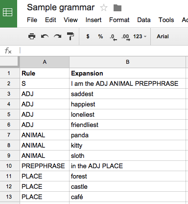
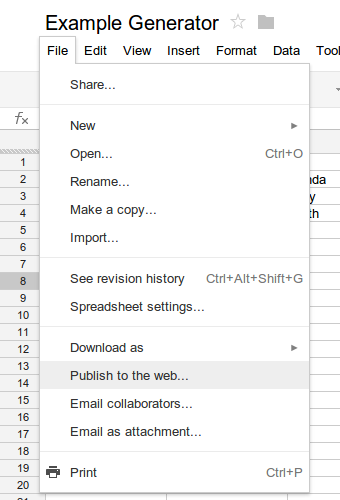

What is this thing??? How do I use it?
A context-free text generator uses a "grammar" to generate strings. You can use this tool to make your own online context-free text generator—all you need to do is put some rows in a Google spreadsheet.
Probably the best way to show you is by example. Let's say you wanted to make a simple generator, that does: "I am the [adjective] [animal] in the [adjective] [place]." You'd make this spreadsheet:
Each row contains a "rule" and an "expansion." By default, the text generation process starts with the rule "S" (for "sentence"). The process then looks at every word in the expansion for that rule. If there's a rule defined for that word, then it will replace the word with the expansion for the rule. If that expansion contains any words that have rules defined for them, it replaces each of those words with their expansions—and so forth, until the only words left are the words that don't have any rules defined for them.
If there's more than one definition for a rule (as in "ADJ" above), then the generation process selects randomly among the rules.
If you're intrigued but confused about all of this, Daniel Howe's explanation of context-free grammar text generation is worth a read. (Note that in Howe's grammars, you can use | to separate alternate expansions for a rule; with this tool, you need to create an extra spreadsheet row for each alternative.)
There are also three special "rules": if you make a rule called GenTitle, then the "expansion" for that rule will be the name of your generator. (Otherwise, it defaults to "My Generator.") If you make a rule called GenAuthor, then the expansion for the rule will be the byline for the generator. (Otherwise it defaults to "Someone.") Finally, if you make a rule called GenAxiom, the rule named in the expansion will be used as the "starting point" for the text generation process. (As mentioned above, the default axiom is S.)
Then when you're ready, select "File" --> "Publish to the web" and click on the "Start publishing" button. You must do this step, otherwise it won't work.
Then just copy and paste the URL of your spreadsheet into this page, and you've got a generator that you can share with friends!
For a somewhat advanced example, see this Weird Sentence Grammar.